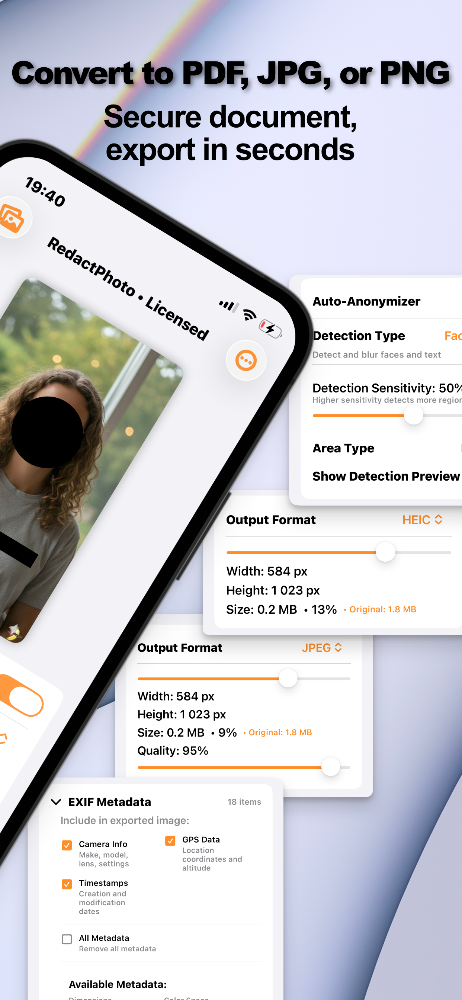

You blurred the account number before posting the screenshot. Is it actually gone? This is one of the rare privacy questions with real experimental evidence, and the answer should change how you redact.
The Uncomfortable Research
Multiple public projects have demonstrated recovery of “hidden” text: Depix reconstructs pixelated text by matching mosaic blocks against rendered candidate characters, and Unredacter extended the attack to more fonts and settings. Deblurring models have similarly sharpened lightly blurred text back to readability. Security publications have run the experiment end-to-end and reached the same conclusion: light blur on clean text is obfuscation, not redaction.
Why Text Is the Weak Case
Text is uniquely recoverable because the search space is tiny: a few dozen characters, in a predictable font, at a guessable size, on a flat background: a constraint-solving problem, not magic. Faces are much harder to reconstruct from a proper blur (there's no small alphabet of faces), though a weak blur can still leave someone recognizable to people who know them. The practical hierarchy, from weakest to strongest: light blur → heavy blur → coarse pixelation → opaque black box.
Redact So There's Nothing to Recover (Step by Step)
- Decide: identity or information?Hiding a face (identity) and hiding text (information) are different problems. Faces tolerate blur and pixelation; sensitive text should get full opacity.
- Use Black Box for sensitive textIn Redact Photo, apply the Black Box style over account numbers, names, addresses, and credentials: 100% opaque, no residual signal underneath.
- Confirm the mask is flattened, not layeredRedact Photo bakes masks into the exported pixels, there is no blur layer to remove. (This is the failure mode of annotation tools that draw over the image and save layers.)
- Strip the metadata tooRecovery isn't only optical: EXIF can carry location and timestamps. Clear it in the same export.

So When Is Blur Fine?
Most of the time. Blurring a stranger's face in a travel photo, softening a messy background, masking a friend's expression for comedy: none of that is under attack from reconstruction tools, and blur (or pixelation) keeps photos looking natural. The rule engages when the hidden content is text someone would benefit from reading: then, and only then, blur is the wrong tool: reach for the box.
Where This Bites in Practice
The classic victims are screenshots (clean fonts on flat backgrounds, ideal attack conditions) and photographed documents. Both guides default to black-box for exactly this reason.
Try it on your own photos
Redact Photo is free to download with a fully unlocked 3-day free trial, mask your first photo in the next two minutes, without it leaving your phone.
Get Redact Photo on the App Store